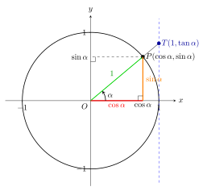

Eclats de vers : Matemat : Trigonometrie
Table des matières
\( \newenvironment{Eqts} { \begin{equation*} \begin{gathered} } { \end{gathered} \end{equation*} } \newenvironment{Matrix} {\left[ \begin{array}} {\end{array} \right]} \)
1. Triangle rectangle
1.1. Définitions
Soit le triangle rectangle :
On définit la fonction trigonométrique du sinus, notée \(\sin\), par :
\[ \sin(\alpha) = b/c \]
On définit la fonction trigonométrique du cosinus, notée \(\cos\), par :
\[ \cos(\alpha) = a/c \]
On définit la fonction trigonométrique de la tangente, notée \(\tan\), par :
\[ \tan(\alpha) = b/a \]
On a aussi les rapports inversés, cosécante, sécante et cotangente :
\[ \csc(\alpha) = c/b \]
\[ \sec(\alpha) = c/a \]
\[ \cot(\alpha) = a/b \]
1.2. Notations
On note :
\[ \sin \alpha = \sin(\alpha) \]
\[ \cos \alpha = \cos(\alpha) \]
\[ \tan \alpha = \tan(\alpha) \]
\[ \csc \alpha = \csc(\alpha) \]
\[ \sec \alpha = \sec(\alpha) \]
\[ \cot \alpha = \cot(\alpha) \]
1.2.1. Carrés
L’usage veut également que :
\[ \sin^2 \alpha = (\sin \alpha)^2 \]
\[ \cos^2 \alpha = (\cos \alpha)^2 \]
\[ \tan^2 \alpha = (\tan \alpha)^2 \]
et ainsi de suite, mais j’évite autant que possible cette notation dans cet ouvrage, car elle n’est pas cohérente avec la notation générale des fonctions qui veut que :
\[ f^2(x) = (f \circ f)(x) \ne [f(x)]^2 = f(x) \cdot f(x) \]
1.3. Corollaires
En multipliant la définition du sinus par \(c\), on obtient :
\[ b = c \ \sin \alpha \]
En multipliant la définition du cosinus par \(c\), on obtient :
\[ a = c \ \cos \alpha \]
2. Relations fondamentales
2.1. Sinus et cosinus
Le théorème de Pythagore dans notre triangle rectangle nous donne :
\[ a^2 + b^2 = c^2 \]
Mais comme :
\[ a = c \ \cos \alpha \]
\[ b = c \ \sin \alpha \]
la première relation devient :
\[ c^2 \ (\cos \alpha)^2 + c^2 \ (\sin \alpha)^2 = c^2 \]
On peut mettre \(c^2\) en évidence :
\[ c^2 \ \left[(\cos \alpha)^2 + (\sin \alpha)^2\right] = c^2 \]
puis diviser par \(c^2\) les deux membres, ce qui nous donne la relation fondamentale entre sinus et cosinus :
\[ (\cos \alpha)^2 + (\sin \alpha)^2 = 1 \]
2.2. Tangente
On a :
\[ \tan \alpha = \frac{b}{a} = \frac{b}{c} \cdot \frac{c}{a} = \frac{b/c}{a/c} \]
Par définition des sinus et cosinus, on a donc :
\[ \tan \alpha = \frac{\sin \alpha}{\cos \alpha} \]
3. Cercle trigonométrique
3.1. Premier quadrant
Le cercle trigonométrique permet de généraliser la définition des fonctions trigonometriques au-delà de l’intervalle \([0,\pi/2]\).

Ce cercle est de rayon \(1\) et permet de générer un triangle rectangle dont l’hypothénuse vaut \(1\) pour chaque angle \(\alpha\). La figure ci-dessus en illustre un exemple. Les deux autres côtés sont alors de longueurs :
\[ a = 1 \cdot \cos \alpha = \cos \alpha \]
\[ b = 1 \cdot \sin \alpha = \sin \alpha \]
Ces longueurs correspondent aussi aux coordonnées du point \(P\) dans le système d’axes \((O,x,y)\). Ces coordonnées peuvent varier entre \(-1\) et \(1\), tout comme les valeurs des fonctions \(\cos\) et \(\sin\).
On en déduit les valeurs des fonctions trigonométriques \(\cos\) et $sin$$ pour n’importe quel angle entre \(0\) et \(2\pi\).
3.2. Deuxième quadrant
Le schéma ci-dessous illustre le cas du deuxième quadrant, c’est-à-dire de l’ntervalle \([\pi/2,\pi]\).
On en déduit que :
\[ \cos(\alpha+\pi/2) = - \sin(\alpha) \]
\[ \sin(\alpha+\pi/2) = \cos(\alpha) \]
3.3. Troisième quadrant
Le schéma ci-dessous illustre le cas du troisième quadrant, c’est-à-dire de l’ntervalle \([\pi,3\pi/2]\).
On en déduit que :
\[ \cos(\alpha+\pi) = - \cos(\alpha) \]
\[ \sin(\alpha+\pi) = - \sin(\alpha) \]
3.4. Quatrième quadrant
Le schéma ci-dessous illustre le cas du quatrième quadrant, c’est-à-dire de l’ntervalle \([3\pi/2,2\pi]\).
On en déduit que :
\[ \cos(\alpha+3\pi/2) = \sin(\alpha) \]
\[ \sin(\alpha+3\pi/2) = - \cos(\alpha) \]
3.5. Angles négatifs
Le schéma ci-dessous illustre le cas d’angles négatifs.
On a clairement :
\[ \cos(-\alpha) = \cos(\alpha) \]
\[ \sin(-\alpha) = - \sin(\alpha) \]
3.6. Généralisation à n’importe quel angle réel
On considère qu’ajouter un nombre entier de tours complets (multiple entier de \(2\pi\)) ne change rien aux fonctions trigonométriques. On a donc :
\[ \cos(\alpha+2 \ \pi \ k) = \cos \alpha \]
\[ \sin(\alpha+2 \ \pi \ k) = \sin \alpha \]
pour tout \(k \in \setZ\). Ce constat permet de couvrir l’ensemble des angles à amplitude réelle.
4. Triangles quelconques
4.1. Loi des sinus
Soit un triangle quelconque. On peut toujours le décomposer en deux triangles rectangles comme suit :
Dans le triangle rectangle de gauche, nous avons :
\[ h = a \ \sin \gamma \]
Dans le triangle rectangle de droite, nous avons :
\[ h = c \ \sin \alpha \]
On en déduit que :
\[ a \ \sin \gamma = c \ \sin \alpha \]
c’est-à-dire :
\[ \frac{a}{\sin \alpha} = \frac{c}{\sin \gamma} \]
On peut aussi tracer la hauteur perpendiculaire au côté \(c\) et suivre un raisonnement similaire, qui nous donne :
\[ a \ \sin \beta = b \ \sin \alpha \]
c’est-à-dire :
\[ \frac{a}{\sin \alpha} = \frac{b}{\sin \beta} \]
On a donc finalement la loi des sinus qui englobe les trois côtés :
\[ \frac{a}{\sin \alpha} = \frac{b}{\sin \beta} = \frac{c}{\sin \gamma} \]
4.2. Loi des cosinus
Soit un triangle quelconque. On peut toujours le décomposer en deux triangles rectangles comme suit :
Dans le triangle rectangle de gauche, nous avons :
\begin{Eqts} e = a \cos \gamma \\ h = a \sin \gamma \end{Eqts}Appliquons à présent le théorème de Pythagore au triangle rectangle de droite :
\[ c^2 = h^2 + (b - e)^2 \]
En tenant compte des relations trigonométriques, cette équation devient :
\begin{align*} c^2 &= a^2 \ (\sin \gamma)^2 + (b - a \ \cos \gamma)^2 \\ &= a^2 \ (\sin \gamma)^2 + b^2 - 2 \ a \ b \ \cos \gamma + a^2 \ (\cos \gamma)^2 \\ &= a^2 \left[(\sin \gamma)^2 + (\cos \gamma)^2 \right] + b^2 - 2 \ \ a \ b \cos \gamma \\ \end{align*}Mais comme la somme entre crochets vaut toujours 1, on a finalement :
\[ c^2 = a^2 + b^2 - 2 \ a \ b \ \cos \gamma \]
Un raisonnement similaire nous donne le même résultat lorsque l’angle \(\gamma\) est obtus.
On peut voir ce résultat comme une généralisation du théorème de Pythagore à un triangle quelconque.

Un raisonnement similaire nous donne un résultat analogue pour les autres côtés :
\[ a^2 = b^2 + c^2 - 2 \ b \ c \ \cos \alpha \]
\[ b^2 = a^2 + c^2 - 2 \ a \ c \ \cos \beta \]
5. Somme de deux angles